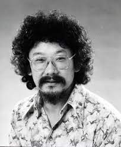

History | Accomplishments | Culture
Not long after David Suzuki was born, Canada was at war with Japan, and because of that all japanese canadians were forced off the west coast. David's dad Carr Suzuki, in an attempt to show his loyalty to the country he was born in, went to volunteer on the Trans-Canada highway, that attempt went unnoticed. The rest of Davids family was sent to an internment camp and gave up most of their possessions.After getting kicked out of his province, David attended highschool in Ontario. During highschool David faced discrimination and bullying, which led him to a very lonely couple years. David's determination payed off when he attended Amherst College after he graduated. Getting his bachelor of Arts and Biology led him to go to the University of Chicago, finally graduating with a PhD of zoology in 1961 and becoming a professor.